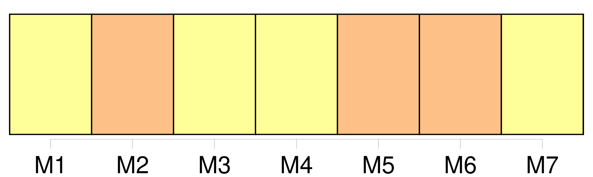
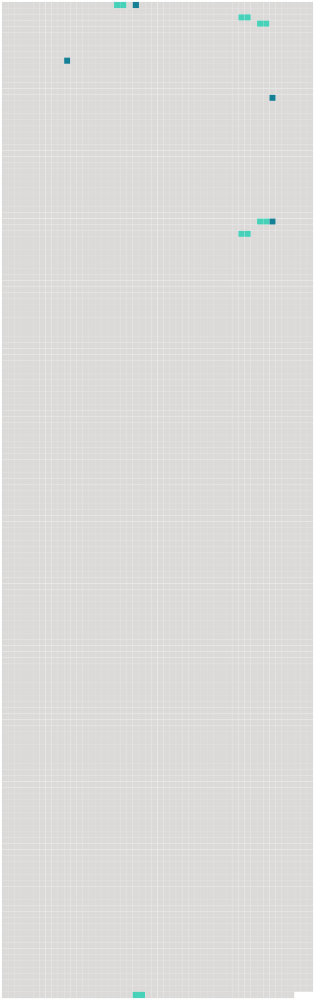

Longueur nb maillons : 10 mentions |
  |
Dans ces moments -là, il me venait un grand désir de remuer, car je pensais à [la maison] , [où] malgré mes quatorze ans seulement j'étais si nécessaire. [7 phrases]
Ma mère essaya de me tranquilliser en m'assurant que tout allait bien à [la maison] , et mon père agacé par mon insistance finit par me dire : [2 phrases] Non, je n'étais pas indispensable à [la maison] et je dus en convenir quoique j'en fusse un peu mortifiée. [9 phrases]
Dès sa première visite Firmin tout joyeux s'était attardé auprès de mon lit, pour me dire : [16 phrases] « À présent, chez nous, [c'] est comme autrefois. [49 phrases]
Je me revoyais déjà de retour à [la maison] [où] je retrouvais la gaieté si amusante de mon frère, les caresses des deux petits, et enfin toute la tendresse de mes parents avec leur bon accord revenu. [4 phrases] Je n'aurai pas la joie du retour à [la maison] [253 phrases]
D'être boiteuse ne pouvait pas m'empêcher de reprendre ma place à [la maison] , et j'annonçai chez nous la nouvelle de ma guérison avec l'espoir que ma mère allait me rappeler sur l'heure. |
 |
La ressource peut être téléchargée sur la page Ortolang
Si vous avez des questions ou vous voyez des erreurs, merci d'envoyer un mail à silvia.federzoni89@gmail.com
Site développé par S. Federzoni (contact)